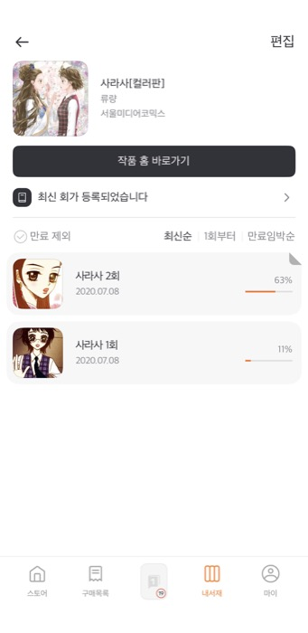

iOS App Architecture
Clean Architecture, MVVM, Coordinator, DI 기반으로 유지보수 가능한 구조를 설계합니다.
Compact Portfolio
커머스·콘텐츠·플랫폼 도메인에서 10년 이상 모바일 앱을 개발하고 운영했습니다. 운영 안정화, 레거시 개선, SwiftUI 전환, 디자인 시스템 구축, AI-assisted workflow를 실무 맥락에 맞게 활용합니다.
Clean Architecture, MVVM, Coordinator, DI 기반으로 유지보수 가능한 구조를 설계합니다.
정기·긴급 배포, OS 대응, VOC/Crash/API 로그 기반 운영 안정성 개선 경험이 있습니다.
레거시 구조의 영향 범위를 나누고 SwiftUI/MVVM 전환 단위를 판단합니다.
공통 UI 컴포넌트, 디자인 토큰, Code Connect 기반 협업 구조를 정리했습니다.
2014.12 ~ 2017.05 · Android Developer
웹에이전시 환경에서 Android 기반 SI/SM 프로젝트를 수행했습니다. CafeUnion, LuxeWater, 올가홀푸드, MyD2 등 커머스/O2O/브랜드/사내 커뮤니케이션 앱의 화면 구현, API 연동, WebView 및 JavaScript Interface, 외부 SDK, 위치 기반 기능, 푸시, 결제/소셜 SDK 연동을 담당했습니다.2017.06 ~ 2021.09 · Android/iOS Developer
GS Retail 전사 모바일 앱 10개 이상을 운영하고 GS 계열사 SI 프로젝트를 개발했습니다. 정기/긴급 배포, 기능 개발, OS 업데이트, deprecated API 검수, VOC/Crash/SDK 이슈 대응을 수행했고, 각 사업부 현업자와 요구사항·배포 일정·장애 영향 범위를 조율했습니다. GS Fresh 차세대 프로젝트에서는 모바일 파트 PL로 Android/iOS 구현 범위와 기술 스펙을 정리했습니다.2021.09 ~ 2025.06 · iOS Developer
초기에는 ONEstory e-book iOS 앱 운영과 기능 개발을 담당했고, 이후 Apple DMA 정책 대응을 위해 ONEstore 사업부로 전배되어 글로벌 앱 마켓 Prototype과 디자인 시스템 구축을 수행했습니다. ONEstory에서는 정기 배포, VOC/OS 대응, 콘텐츠 뷰어·보관함·구매/대여 흐름·로그인·외부 SDK 연동, 위젯/iPad 대응을 담당했습니다.2025.06 ~ 2025.08 · iOS Developer
운영 중인 Encar iOS 앱에서 UIKit/Objective-C 기반 레거시 구조를 파악하고 SwiftUI + MVVM 전환 범위를 담당했습니다. 제네시스 옵션 필터 화면 전환, 광고 모듈 통합, Crashlytics 로깅 중앙화, API 요청/응답 로깅 개선을 수행해 운영 이슈 추적 기준을 정리했습니다.아래 내용은 제출용 요약입니다. 상세 이미지, 아키텍처, 코드 예시, 결과 스크린샷은 웹 포트폴리오에서 확인할 수 있습니다.
기간 2024.06 ~ 2025.06 · 인원 Android 3, iOS 3, 디자이너 3, BE 1, FE 1 · 역할 디자인 시스템 개발파트 PM
ONEstore 제품군에서 공통 UI 컴포넌트와 디자인 리소스를 일관되게 사용하기 위한 디자인 시스템 구축 프로젝트입니다. iOS 개발 파트 기준으로 컴포넌트 구조, 디자인 토큰, Style Dictionary, Figma Code Connect 연계 흐름을 검토하고 UXD팀 및 Android 개발자와 협업했습니다. 단순 UI 공통화가 아니라 디자인 기준과 iOS 구현 구조가 연결될 수 있도록 컴포넌트 사용 기준, 예외 케이스, 협업 커뮤니케이션을 정리했습니다.
SwiftUI, Tuist, Figma, Design Token, Style Dictionary, Code Connect


기간 2024.01 ~ 2024.12 · 인원 iOS 6 · 역할 iOS PL / 아키텍처·네트워크 모듈 설계·공통 UI 구축·API 설계
Apple DMA 정책 대응을 위한 글로벌 앱 마켓 Prototype 프로젝트입니다. MarketplaceKit 검토, 앱 아키텍처, 네트워크 모듈, JavaScript Interface 구조를 정리하고 Prototype → Alpha/Beta 단계의 iOS 구현 범위와 리스크를 관리했습니다. Apple Cork 오프라인 세션에서 확인한 DMA 정책, MarketplaceKit 적용 방향, iOS 구현 제약사항을 기술 검토에 반영했습니다.
SwiftUI, Clean Architecture, MVVM, Tuist, MarketplaceKit, JavaScript Interface


기간 2017 ~ 2021 · 인원 Android 2, iOS 2, 총괄 1 · 역할 Android/iOS 운영 개발, 모바일 파트 PL
GS Fresh, 달리살다, 미식일상, 배송기사님 전용 앱, 나만의 냉장고, GS 수퍼마켓 등 GS Retail 모바일 앱 10개 이상을 운영했습니다. 정기/긴급 배포, 기능 개발, OS 대응, deprecated API 검수, VOC/Crash/SDK 이슈 대응과 사업부 커뮤니케이션을 수행했습니다. GS Fresh 차세대 프로젝트에서는 Android/iOS 개발 범위, 사용자 시나리오, 플랫폼별 기술 스펙, 구현 문서와 협업 커뮤니케이션을 정리했습니다.
Swift, Objective-C, Java, RxSwift, Firebase, Crashlytics, Alamofire, Moya, WKWebView, SSO
기간 2021.09 ~ 2023.12 · 인원 iOS 3, Android 3 · 역할 iOS 운영 개발
ONEstory e-book iOS 앱의 운영과 기능 개발을 담당했습니다. 정기 배포, VOC 대응, OS 업데이트, 화면 개선, SDK 연동, 위젯 및 iPad 대응을 수행했습니다. 콘텐츠 뷰어, 보관함, 구매/대여 흐름, 로그인 및 외부 SDK 연동처럼 사용자가 콘텐츠를 탐색하고 읽는 과정에 필요한 기능을 유지보수했고, 배포 전 기능 검수와 오류 대응도 함께 수행했습니다.
Swift, UIKit, Objective-C, SwiftUI, KeychainAccess, Kingfisher, Lottie, Amplitude

기간 2025.06 ~ 2025.08 · 역할 iOS 개발
운영 중인 iOS 앱에서 UIKit/Objective-C 기반 레거시 구조를 파악하고 제네시스 옵션 필터 화면을 SwiftUI + MVVM 구조로 전환했습니다. 기존 UIKit 앱과의 연결 지점, 상태 관리 방식, 화면 전환 흐름, 테스트 가능성을 고려해 전환 범위를 정리했습니다. 광고 모듈 통합, Crashlytics 로깅 중앙화, API 요청/응답 로깅 개선도 수행했습니다.
Objective-C, Swift, UIKit, SwiftUI, MVVM, AppsFlyer, Braze, Crashlytics, Alamofire

기간 2025.11 ~ 2026.03 · 역할 iOS 앱 설계, 구현, App Store 배포
VisionKit과 OpenAI API 기반 영어 학습지 이미지 분석 앱을 설계·구현해 App Store에 출시했습니다. 모든 이미지를 바로 AI 처리로 넘기지 않고 영어 학습지 여부, 이미지 품질, 후속 정리 필요 여부를 먼저 판별하는 triage 흐름을 설계했습니다. 프롬프트, 응답 DTO, ACCEPT/REJECT, reason_code, should_run_cleanup 검증 흐름을 직접 구성하고 SwiftUI 상태 처리와 배포까지 담당했습니다.
SwiftUI, VisionKit, OpenAI API, Structured Response, Clean Architecture, MVVM, Firebase Remote Config, Fastlane
App Store 학습지 지우개 Note Cleaner


기간 2026.05 ~ 진행 중 · 인원 iOS 1, Android 1, 기획 1 · 역할 iOS 앱 구조 설계 및 구현
저장한 링크와 메모를 AI 태그와 로컬 검색 인덱스로 정리해, 나중에 키워드·태그·자연어로 다시 찾을 수 있게 만든 iOS 키워드 메모 앱입니다. SwiftUI 화면, GRDB 로컬 저장소, AI 태그 생성/검색 흐름, Share Extension, 실기기 QA를 담당했습니다. Codex 작업에서는 AGENTS.md, PRD, feature-plan / ios-implementation / grdb-search / security-review skill을 활용해 단계별 구현 범위와 금지 조건을 명확히 했습니다.
SwiftUI, GRDB, Share Extension, AI Search, Firebase Functions, Codex, AGENTS.md, Skills


상태 App Store 출시 · 역할 macOS 앱 설계, 구현, 출시 준비
출석, 집중 타이머, Todo, 통계, 메뉴바, 위젯을 포함한 macOS 생산성 앱입니다. 기능별 kickoff 문서로 goal, policy, file boundaries, risks, out-of-scope를 먼저 정리하고, implementation_reviewer / apple_surface_specialist / persistence_and_stats agent와 feature-kickoff / implement-quick-surface / ship-check skill을 활용해 기능 구현과 검증 흐름을 분리했습니다. App Store 제출 자료와 출시까지 진행했습니다.
SwiftUI, macOS, MenuBarExtra, Widget, App Group, JSON Persistence, Firebase Remote Config, Codex
App Store FocusBoard

Android 개발자로 시작해 iOS로 전향하는 과정에서 두 플랫폼의 화면 구조, 배포/운영 방식, SDK/API 연동 차이를 직접 학습했습니다. 이 경험은 GS Fresh 차세대 프로젝트에서 Android/iOS 개발 범위와 사용자 시나리오, 플랫폼별 기술 스펙을 맞추는 모바일 파트 조율 역할로 이어졌습니다.
운영 중인 앱에서는 기능 구현만큼 배포 안정성, 장애 추적, OS 변화 대응을 중요하게 봅니다. 레거시 구조는 한 번에 교체하기보다 현재 구조의 제약과 의존성을 먼저 파악하고, 영향 범위를 나누어 SwiftUI/MVVM 등으로 점진적으로 전환하는 방식을 선호합니다.
디자이너, 기획자, 서버/웹/모바일 개발자와 요구사항을 맞추는 협업을 꾸준히 해왔고, 반복되는 구현과 논의는 디자인 시스템, 공통 컴포넌트, 사용 기준으로 구조화하는 방식에 관심이 많습니다. AI 도구는 분석과 초안 작성에 활용하지만 최종 설계 판단과 코드 품질 검증은 직접 수행합니다.
요구사항, API 계약, 디자인 기준, 아키텍처 규칙을 먼저 정리해 AI가 같은 기준을 참조하도록 만듭니다.
현재 단계의 변경 목표와 금지 조건만 전달해 불필요한 컨텍스트와 diff를 줄입니다.
수정 대상 파일, 금지 파일, 보안 기준, 레이어 경계를 지정해 과한 변경을 막습니다.
AI 결과는 Xcode build/test, git diff/status, 실제 앱 실행, 수동 QA로 직접 검증합니다.
Core iOS Swift, Objective-C, UIKit, SwiftUI, Combine, RxSwift
Architecture Clean Architecture, MVVM, MVI, DI, Coordinator
Operation Firebase, Crashlytics, API Logging, Fastlane, XCTest
Design / AI Figma, Design Token, Code Connect, Cursor, Claude Code, Codex, Copilot
프로젝트별 상세 설명, 아키텍처 도식, 코드 예시, 화면 캡처, App Store 링크는 웹 포트폴리오에서 확인할 수 있습니다.
https://amyleed2.github.io/Portfolio/